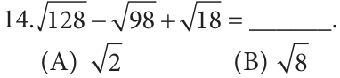

<!DOCTYPE html>
<html lang="en">
<head>
<meta charset="UTF-8">
<meta name="viewport" content="width=device-width,initial-scale=1">
<title>Exercise 1.4 — Numbers</title>
<meta name="description" content="Class 8 Mathematics · Numbers · Exercise 1.4">
<link rel="icon" href="data:image/svg+xml,<svg xmlns='http://www.w3.org/2000/svg' viewBox='0 0 100 100'><text y='.9em' font-size='90'>📘</text></svg>">
<link rel="stylesheet" href="../../../assets/book.css">
<link rel="stylesheet" href="https://cdn.jsdelivr.net/npm/katex@0.16.11/dist/katex.min.css" crossorigin="anonymous">
</head>
<body>
<header class="topbar">
<div class="topbar-in">
  <div class="crumb">
    <span class="c1"><a href="../../../index.html">Library</a> · <a href="../../index.html">Class 8 Mathematics</a></span>
    <span class="c2">Numbers · Exercise 1.4</span>
  </div>
  <a class="tb-btn" data-nav="prev" href="../../01-numbers/10-square-root-1.7/index.html" title="1.7 Square Root">←</a>
  <details class="drawer"><summary class="tb-btn" title="Sections in this chapter">☰</summary>
<div class="drawer-panel"><div class="dh">Numbers</div><a href="../01-chapter-opener/index.html">Chapter opener; 1.1 Introduction</a><a href="../02-rational-numbers-1.2/index.html">1.2 Rational Numbers</a><a href="../03-exercise-1.1/index.html">Exercise 1.1</a><a href="../04-basic-arithmetic-operations-on-rational-numbers-1.3/index.html">1.3 Basic Arithmetic Operations on Rational Numbers</a><a href="../05-word-problems-on-the-basic-operations-1.4/index.html">1.4 Word Problems on the basic operations</a><a href="../06-exercise-1.2/index.html">Exercise 1.2</a><a href="../07-properties-of-rational-numbers-1.5/index.html">1.5 Properties of Rational Numbers</a><a href="../08-exercise-1.3/index.html">Exercise 1.3</a><a href="../09-introduction-to-square-numbers-1.6/index.html">1.6 Introduction to Square Numbers</a><a href="../10-square-root-1.7/index.html">1.7 Square Root</a><a href="../11-exercise-1.4/index.html" aria-current="page">Exercise 1.4</a><a href="../12-cubes-and-cube-roots-1.8/index.html">1.8 Cubes and Cube Roots</a><a href="../13-exercise-1.5/index.html">Exercise 1.5</a><a href="../14-exponents-and-powers-1.9/index.html">1.9 Exponents and Powers</a><a href="../15-exercise-1.6/index.html">Exercise 1.6</a><a href="../16-exercise-1.7/index.html">Exercise 1.7</a><a href="../17-summary/index.html">SUMMARY</a></div></details>
  <a class="tb-btn" data-nav="next" href="../../01-numbers/12-cubes-and-cube-roots-1.8/index.html" title="1.8 Cubes and Cube Roots">→</a>
  <button class="tb-btn" data-theme-toggle title="Toggle light / dark" aria-label="Toggle light or dark theme">◐</button>
</div>
<div class="progress"><span style="width:10.2%"></span></div>
</header>
<main class="wrap">
<div class="sec-head">
  <p class="eyebrow"><a href="../index.html">Chapter 1 · Numbers</a></p>
  <h1>Exercise 1.4</h1>
  <p class="sec-meta">Textbook pages 35–36 · 2 figures</p>
</div>
<article class="prose">
<ul class="qlist">
<li><span class="mk">1.</span><span class="lt">Fill in the blanks:</span></li>
<li><span class="mk">(i)</span><span class="lt">The ones digit in the square of 77 is___________.</span></li>
<li><span class="mk">(ii)</span><span class="lt">The number of non-square numbers between 24 and 25 is ______.</span></li>
</ul>
<ul class="qlist">
<li><span class="mk">(iii)</span><span class="lt">The number of perfect square numbers between 300 and 500 is ______.</span></li>
<li><span class="mk">(iv)</span><span class="lt">If a number has 5 or 6 digits in it, then its square root will have ___________ digits.</span></li>
<li><span class="mk">(v)</span><span class="lt">The value of 180 lies between integers ______ and ______.</span></li>
<li><span class="mk">2.</span><span class="lt">Say True or False:</span></li>
<li><span class="mk">(i)</span><span class="lt">When a square number ends in 6, its square root will have 6 in the unit’s place.</span></li>
<li><span class="mk">(ii)</span><span class="lt">A square number will not have odd number of zeros at the end.</span></li>
<li><span class="mk">(iii)</span><span class="lt">The number of zeros in the square of 91000 is 9.</span></li>
<li><span class="mk">(iv)</span><span class="lt">The square of 75 is 4925.</span></li>
<li><span class="mk">(v)</span><span class="lt">The square root of 225 is 15.</span></li>
<li><span class="mk">3.</span><span class="lt">Find the square of the following numbers.</span></li>
<li><span class="mk">(i)</span><span class="lt">17 (ii) 203 (iii) 1098</span></li>
<li><span class="mk">4.</span><span class="lt">Examine if each of the following is a perfect square.</span></li>
<li><span class="mk">(i)</span><span class="lt">725 (ii) 190 (iii) 841 (iv) 1089</span></li>
<li><span class="mk">5.</span><span class="lt">Find the square root by prime factorisation method.</span></li>
<li><span class="mk">(i)</span><span class="lt">144 (ii) 256 (iii) 784 (iv) 1156 (v) 4761 (vi) 9025</span></li>
<li><span class="mk">6.</span><span class="lt">Find the square root by long division method.</span></li>
<li><span class="mk">(i)</span><span class="lt">1764 (ii) 6889 (iii) 11025 (iv) 17956 (v) 418609</span></li>
<li><span class="mk">7.</span><span class="lt">Estimate the value of the following square roots to the nearest whole number.</span></li>
<li><span class="mk">(i)</span><span class="lt">440 (ii) 800 (iii) 1020</span></li>
<li><span class="mk">8.</span><span class="lt">Find the square root of the following decimal numbers and fractions.</span></li>
</ul>
<p>( )i 2 89. (ii) 67 24. (iii) 2.0164 (iv) (v) 7</p>
<div class="mathblock"><p>\(\frac{14418}{22549}\)</p></div>
<ul class="qlist">
<li><span class="mk">9.</span><span class="lt">Find the least number that must be subtracted to 6666 so that it becomes a perfect square.</span></li>
</ul>
<p>Also, find the square root of the perfect square thus obtained.</p>
<ul class="qlist">
<li><span class="mk">10.</span><span class="lt">Find the least number by which 1800 should be multiplied so that it becomes a perfect square.</span></li>
</ul>
<p>Also, find the square root of the perfect square thus obtained.</p>
<p>Objective Type Questions Objective Type Questions</p>
<ul class="qlist">
<li><span class="mk">11.</span><span class="lt">The square of 43 ends with the digit ______.</span></li>
<li><span class="mk">(A)</span><span class="lt">9 (B) 6 (C) 4 (D) 3</span></li>
<li><span class="mk">12.</span><span class="lt">_______ is added to 24 to get 25 .</span></li>
</ul>
<ul class="qlist">
<li><span class="mk">(A)</span><span class="lt">4 (B) 5 (C) 6 (D) 7</span></li>
</ul>
<ul class="qlist">
<li><span class="mk">13.</span><span class="lt">48 is approximately equal to ______.</span></li>
<li><span class="mk">(A)</span><span class="lt">5 (B) 6 (C) 7 (D) 8</span></li>
</ul>
<figure class="fig"></figure>
<ul class="qlist">
<li><span class="mk">(C)</span><span class="lt">48 (D) 32</span></li>
<li><span class="mk">15.</span><span class="lt">The number of digits in the square root of 123454321 is ______.</span></li>
<li><span class="mk">(B)</span><span class="lt">5 (C) 6 (D) 7</span></li>
</ul>
</article>
<nav class="pager"><a class="" data-nav="prev" href="../../01-numbers/10-square-root-1.7/index.html"><span class="dir">← Previous</span><span class="t">1.7 Square Root</span><span class="ch">Numbers</span></a><a class="nx" data-nav="next" href="../../01-numbers/12-cubes-and-cube-roots-1.8/index.html"><span class="dir">Next →</span><span class="t">1.8 Cubes and Cube Roots</span><span class="ch">Numbers</span></a></nav>
</main><footer class="site">Generated from the source textbook PDFs · text, figures and exercises belong to their respective publishers.</footer><script defer src="https://cdn.jsdelivr.net/npm/katex@0.16.11/dist/katex.min.js" crossorigin="anonymous"></script>
<script defer src="https://cdn.jsdelivr.net/npm/katex@0.16.11/dist/contrib/auto-render.min.js" crossorigin="anonymous"
  onload="renderMathInElement(document.body,{delimiters:[
    {left:'\\(',right:'\\)',display:false},
    {left:'$$',right:'$$',display:true},
    {left:'\\[',right:'\\]',display:true}],throwOnError:false,ignoredTags:['script','noscript','style','textarea','pre','code']})"></script>
<script src="../../../assets/book.js"></script>
<script defer src="../../../../assets/search.js?v=1789782769"></script>
<script defer src="../../../../assets/screenshot.js?v=2"></script>
</body>
</html>
